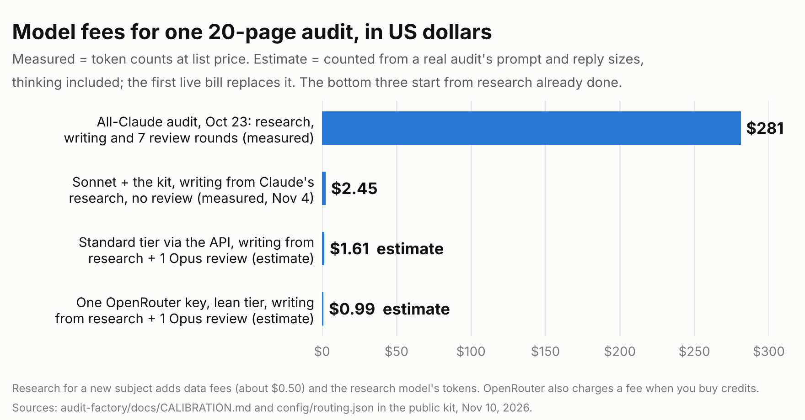
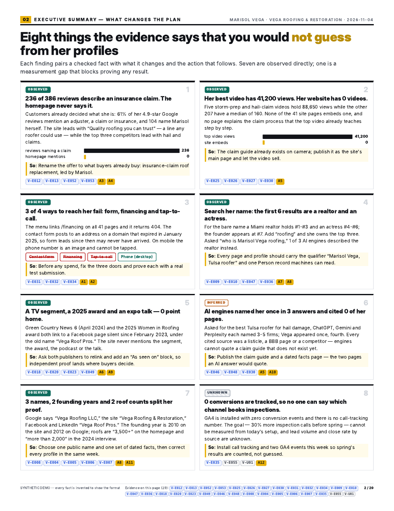

Claude (Opus 5.5, working in a Claude Code session) rebuilt our 20-page audit as a kit any model can run, tested it blind, had its code reviewed by a separate agent, fixed what broke, and published it free on GitHub. This is the work record: what we did, what we got wrong, what it costs, and what is still unproven.
A good audit tells a business owner what is true about their brand and what to do next. Ours were good but expensive. One cost $281 in AI fees, so we could only make a few. Now a cheaper model writes the pages. Plain code checks them. Our best model only reviews the finished text. From finished research, that should cost about $1 to $2. That is cheap enough to run for every client, every month.

Goal: keep the quality of our best audits while cutting the cost enough to make them at volume. Content: the kit, a blind test scored by an independent judge, an independent code review, and every receipt. Who it is for: agencies, AI builders and owners who want the 20-page audit in our audit standard without a frontier-model bill.
We measured finished audits from Claude, Muse, Codex and ChatGPT agents. The ones Dennis graded best carry 460 to 475 words and 95 to 100 specific numbers per page, with evidence on every page. The weaker ones carry 200 to 270 words and 8 to 39 numbers. The gap had four causes, and none of them was "a smarter model":
One more cause was not about models at all. An October attempt to split audits across cheap "lanes" stalled for ten days, because two of the lanes were work orders that no running program ever read. So in the kit, one runner owns an audit from start to finish.
The kit makes the quality bar into code. Models write the words of each page into one file. Code draws all 20 pages from it, so every model gets the same design. Then 45 automatic checks run, 40 on the content and 5 on the finished PDF: evidence on every page, scores that add up, a picture on every page, nothing from the brief's do-not-print list, approval before any change to a client's property, and the name and face of the person who prepared the audit on page 1. Each failure goes back to the writer with the exact fix, up to three times. Last, our best model reviews the finished text in a fresh session that never saw the drafting.

We gave Claude Sonnet the research behind one of our October company audits, with Claude's own 14 insights taken out, and let it build all 20 pages with the kit. Our first run of this test was not blind: the research file still carried our notes on how to present each conflict, and Sonnet echoed at least seven of them. We stripped those notes, added a test that keeps them out, and ran it again on a frozen copy of the kit.
A separate reviewer that built none of the audits scored every page of the clean run: 11 insights found, 1 partly found, 2 missed. It missed a rival that outranks the brand with fewer assets, and claims in the work order that the evidence does not support. The kit's findings card now names both on purpose. The cheaper models also found four things Claude had missed, such as the brand's own stores being absent from the local map results.
To make many audits, the kit can send every call through one OpenRouter key: Claude for judgment, cheaper open models for drafting. Before spending anything, we tested that path against a stand-in for OpenRouter's API, now 30 tests. Testing found two real bugs:
Then a separate agent that wrote none of the code reviewed it. It found five more problems. All are fixed, and each code fix has a test:
A second review on Nov 8, by a different model that wrote none of the code, found five more problems. All are fixed, and each has a test that fails on the old code:
Every call now asks only for providers that do not collect user data, records the charge OpenRouter reports, and never crosses the spending cap. A check compares every model, price and thinking level with OpenRouter's live list, and a dated copy of that list is kept in the kit.
| What | Models | Model fees | Basis |
|---|---|---|---|
| All-Claude audit, Oct 23: research, writing, seven reviews | Opus 5.5, Sonnet 5.5 | $281.18 | measured: 1.04 billion tokens, 98.3% cache reads, list price |
| Blind test: Sonnet with the kit, writing from Claude's research | Sonnet 5.5 | $2.45 | measured: 77,000 output tokens, 8.0 million cache reads, list price |
| Standard tier through the API, typical / worst case | Sonnet 5.5, Opus 5.5, Haiku 5.5 | $1.61 / $3.07 | estimate: a real audit's prompt and reply sizes at list price, thinking included |
| One OpenRouter key, lean tier, typical / worst case | Sonnet 5.5, DeepSeek V4.1 Flash, Opus 5.5 | $0.99 / $1.59 | estimate: same sizes at OpenRouter's prices, read Nov 10, 2026 |
| One OpenRouter key, budget tier (experimental, no Claude), typical / worst case | Grok 4.7, DeepSeek V4.1 Flash, GPT-6.1 Sol | $0.66 / $1.04 | estimate; quality not measured |
Rates per million tokens in and out: Opus 5.5 $4 and $20, Sonnet 5.5 $2 and $10, DeepSeek V4.1 Flash $0.045 and $0.50; thinking is billed as output. The estimates start from finished research and include one review; the worst case adds three fix rounds, every review pass, the most thinking each call allows, and retries. On the lean tier, the one Opus review is about half the cost. The blind test cost more than the estimates because it was an interactive session that re-read its files, about 8 million tokens' worth; the kit's runner sends each step's prompt once. Research for a new subject adds data fees (about $0.50) and the research model's tokens, and OpenRouter charges a fee when you buy credits (OpenRouter's pricing FAQ).
THE DELIVERABLE
The 20-page audit kit, free and open on GitHub: stage cards any model can follow, the renderer, the 46 checks, the cost model, the OpenRouter path and the demo audit.
The demo runs with no keys. For a live run, create a key at openrouter.ai and keep it in your own secret store. For confidential work, also set the account's privacy setting to "ZDR only".
cd audit-factory
pip install -r requirements.txt && python -m playwright install chromium
python -m factory20 openrouter-check
python -m factory20 init runs/demo --from-demo
python -m factory20 run runs/demo --tier openrouter-lean --max-usd 3Verified: the kit's full history and its passing automated checks (102 tests on the kit, 355 across the repository) are public in pull request #108 on GitHub; the judge's scores, the code review's findings and every measurement are in the kit's calibration file; every OpenRouter model, price and thinking level was checked against OpenRouter's live list on Nov 4, 2026, and the DeepSeek price again on Nov 10, when it changed.
Not proven yet: a live OpenRouter bill (the first run, on the public demo, is next); research for a new subject at low cost (the collectors are the next build); the quality of the experimental no-Claude tier; and the pilot, which rebuilds three audits we already made and grades each against its original (verdict Nov 17).
| Execution ID | AUDIT-FACTORY-20261104 |
| Task and recipe | How We Audit (method edition AUDIT-METHOD-2026.10.02); the personal-brand-audit skill and the kit from pull request #108 |
| Trigger | Dennis Yu asked, Nov 4, 2026, to make audits scale without losing quality, then to test the OpenRouter path and publish |
| Operator | Claude, Opus 5.5, in a Claude Code session; an independent judge and an independent code reviewer in separate sessions |
| Inputs | finished 20-page audits from four kinds of agent; the research ledger behind one October company audit |
| Output | the kit, merged; the blind test; the code review; the receipts above |
| Deviations | the first blind test was not blind and was rerun; two live-path bugs found by tests and five problems found by the code review were fixed before any spend |
| Next | the first live OpenRouter run; research collectors; the pilot verdict on Nov 17 (audit production) |